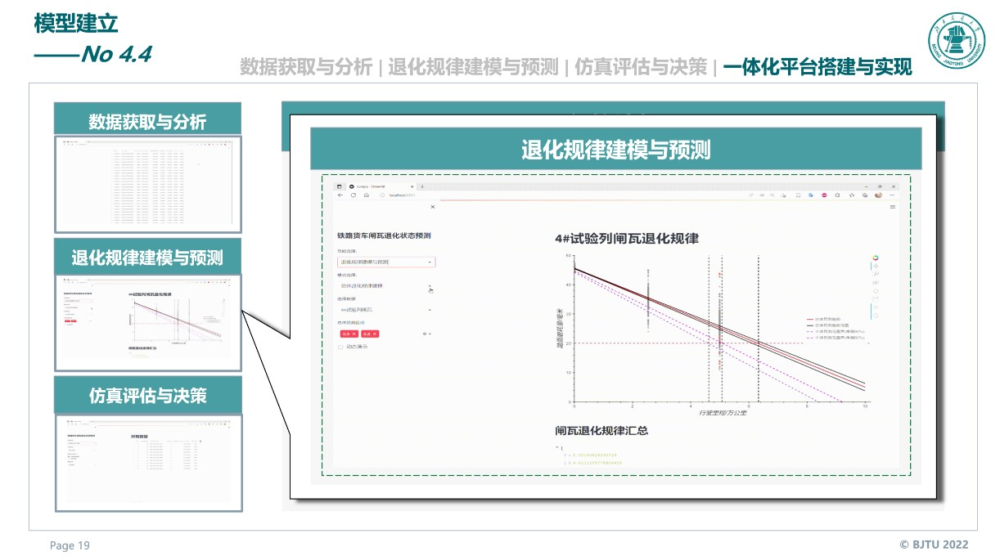

Brake Shoe Life Prediction and Health Management for Railway Freight Cars
 Integrated decision-support platform for brake-shoe life prediction and maintenance planning
Integrated decision-support platform for brake-shoe life prediction and maintenance planning
Overview
This project was developed for the 2022 China University Mechanical Engineering Innovation and Creativity Competition in the Industrial Engineering and Lean Management Innovation Track. The work focused on railway freight-car brake shoes, aiming to improve maintenance efficiency and safety through data analysis, degradation modeling, and maintenance decision support.
Instead of relying only on manual inspection and reactive replacement, the project explored a more structured maintenance workflow: collect detailed wear data, model brake-shoe degradation at both the population and individual levels, and use simulation-based evaluation to support concentrated maintenance decisions.
Problem
Freight-car brake shoes are safety-critical components, but their maintenance is often costly, labor-intensive, and weakly supported by quantitative models. The team identified several practical issues during field-oriented investigation:
- Brake-shoe replacement work occupied substantial inspection time.
- Existing maintenance decisions relied heavily on visual estimation and experience.
- Wear data were incomplete and difficult to use systematically.
- Brake-shoe degradation showed strong individual variation, making fixed replacement rules inefficient.
These issues created a tension between batch maintenance efficiency and individualized maintenance accuracy, which is a classic industrial-engineering decision problem.
Approach
The project combined data-driven analysis and model-driven decision support into one workflow.
- Multi-year field investigation and data collection were carried out with railway maintenance-related organizations.
- A generalized linear model was used to describe overall degradation trends.
- A linear mixed-effects model was introduced to capture individual wear differences.
- Monte Carlo simulation was used to compare candidate maintenance strategies under multiple performance criteria.
- A lightweight visual analytics platform was built to connect data access, degradation prediction, and maintenance decision support.

The resulting system linked data management, degradation prediction, simulation-based evaluation, and maintenance planning into one integrated interface.
Outcomes
The project proposed a practical path from reactive maintenance toward planned and condition-aware maintenance for railway freight cars. According to the competition presentation, the work demonstrated:
- a predictive framework for brake-shoe life and wear analysis,
- decision support for selecting concentrated maintenance schemes,
- a deployable visualization platform for engineering use,
- and measurable potential in reducing maintenance burden, lowering cost, and improving safety.
More broadly, the project showed how industrial engineering methods can be applied to a real transportation-maintenance problem by combining field data, statistical modeling, simulation, and system design.
News Coverage
A related news report is available from Beijing Jiaotong University News:
Acknowledgements
This project was completed in collaboration with jiayi sun, rihan hai, and chenxiao fu, under the supervision of qi li and mingcheng e.
{kind=link}